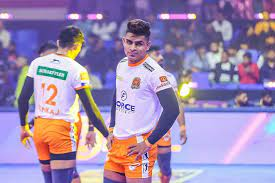

pardeep Narwal

Pardeep Narwal is an Indian former international kabaddi player, who plays as a raider. Widely regarded as the greatest raider in kabaddi history, he led the Patna Pirates to three straight titles in Pro Kabaddi League and holds a multitude of the league's raiding records.
read moreDhoni

Dhoni was born on 7 July 1981 in Ranchi, Bihar (now in Jharkhand) in a Hindu Rajput family to Pan Singh and Devaki Devi.[2][3] His parents hailed from Lwali village in Uttar Pradesh (now Uttarakhand) and he was the youngest of three children.[4][5][6] His family spells the surname as "Dhauni".[7] The spelling "Dhoni" emerged due to a spelling mistake in his school certificates and, despite repeated attempts by his family, has never been rectified.
read morevirat kholi

Virat Kohli is an Indian international cricketer and the former captain of the Indian national cricket team. He is a right-handed batsman and an occasional medium-pace bowler. He currently represents Royal Challengers Bengaluru in the IPL and Delhi in domestic cricket.
read moreaslam inamdar
Aslam is an Indian professional Kabaddi player who plays in the Pro Kabaddi League. He began his career playing in the sub-junior nationals in Maharashtra, then joined Puneri Paltan as a raider for the 2021 PKL season.
read more